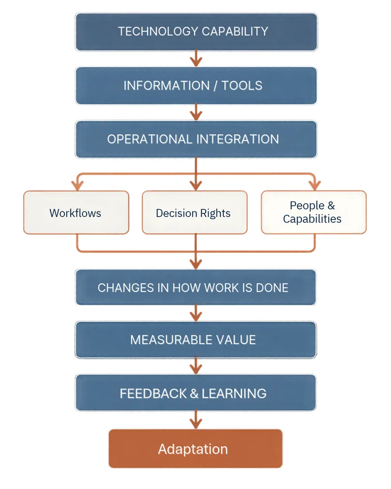
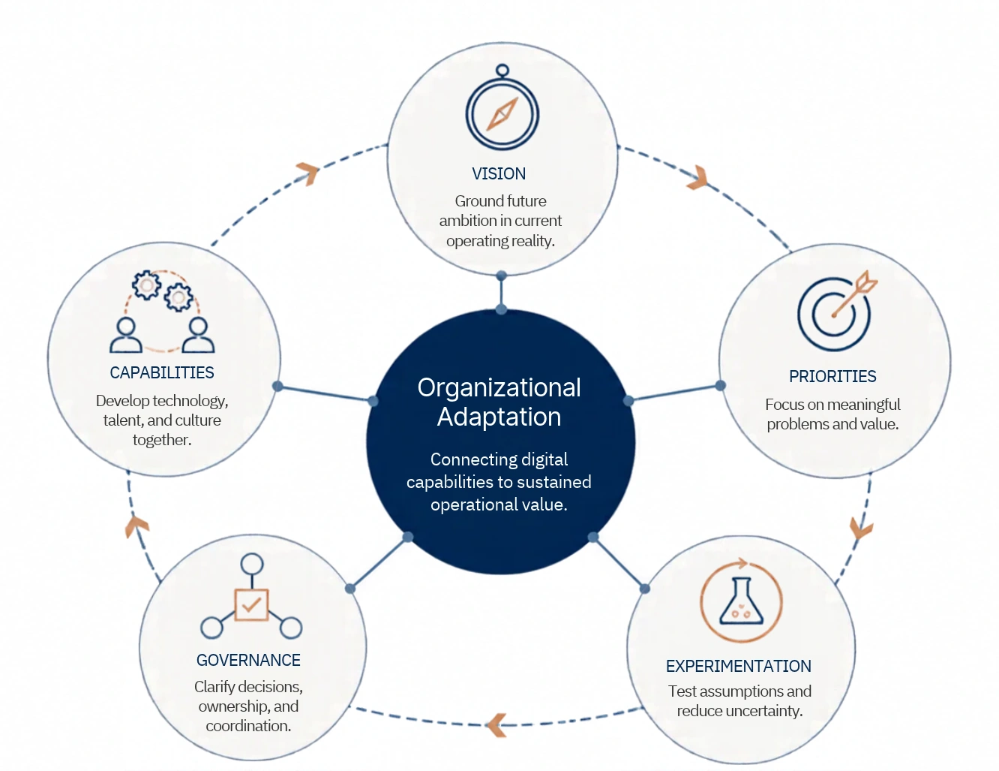

Executive Summary
Digital technologies are expanding what manufacturing organizations can observe, analyze, automate, and predict.
Yet the ability to deploy technology does not automatically become improved operational performance.
A recurring challenge lies in what happens around technology: how problems are identified, decisions are made,
workflows are redesigned, responsibilities are assigned, and organizational capabilities are developed.
Drawing on digital transformation research, practitioner frameworks, and my experience developing a transformation
strategy for a manufacturing function, this article advances a central argument:
Digital transformation should be approached as a systems challenge in which technology and organizational
practices must evolve together to create sustained value. I examined 5 interconnected areas: vision, problem
prioritization, experimentation, governance, and capability development and considered their implications for
manufacturing. These observations do not establish a universal model for success. However, they provide a basis
for examining how organizations move from technology deployment to meaningful change in the way work is done.
When Technology Deployment Is Not Transformation
Manufacturing organizations have access to increasingly sophisticated tools for collecting information, monitoring processes, identifying abnormalities, predicting outcomes, and supporting decisions. Connected equipment, industrial analytics, digital twins, automation, and artificial intelligence are expanding the possibilities of how production systems can operate. Yet an important distinction remains: Implementing technology is not necessarily the same as transforming how an organization works. Consider a manufacturing operation introducing automated quality monitoring. The technical implementation may be successful. Equipment data is available, abnormalities are detected, and information is displayed through an interface. But what happens next?
- Who determines whether an abnormality requires intervention?
- Who has the authority to respond?
- How does information move between production, maintenance, quality, and engineering?
- What happens when the immediate condition is corrected but the underlying problem remains?
- How does the organization determine whether the technology created meaningful operational value?
The Limitation of a Tech Centered View
Technology is often the most visible component of digital transformation. It is relatively straightforward to describe. A system can be installed, an application is deployed, a dashboard is launched. These are identifiable milestones, but they do not necessarily demonstrate that an organization has improved. There are several different outcomes worth distinguishing:
- Deployment: Has the technology been implemented successfully?
- Adoption: Are the intended users incorporating it into their work?
- Operational Change: Has it influenced how work is performed or decisions are made?
- Value Realization: Have the changes produced measurable benefits?
- Sustainability: Can the benefits be maintained as operating conditions change?
The Importance of the operating model
An organization's operating model influences how work is coordinated, responsibilities are distributed, and decisions move across functional boundaries. If a transformation effort changes the technology without considering these relationships, the organization may continue operating through routines designed for a different environment. For example, access to more frequent production information may not improve response if escalation responsibilities remain unclear. Similarly, faster analytics may provide limited benefits if decisions are delayed by competing priorities or insufficient authority. This does not mean every implementation requires complete organizational redesign. The relevant question is therefore not simply whether the technology works, but what must change around it for that capability to influence operational performance.

What Industry Evidence Suggests
This interpretation is not based solely on my exposure. Several industry studies and practitioner frameworks point toward the importance of organizational factors in realizing value from digital investments. They do not all examine the same technologies or measure success in the same way, but together they provide useful input.
McKinsey- Workflow redesign and AI value: McKinsey's 2025 research on the state of AI identified workflow redesign as one of the organizational practices most strongly associated with reported financial impact from generative AI. However, relatively few respondents reported fundamentally redesigning workflows. This raises an important question: Are organizations introducing new technology faster than changing the processes through which the technology creates value? The findings are relevant to the argument, although they examine generative AI across industries rather than manufacturing transformation specifically.
Deloitte- The operating-model challenge: Deloitte's The Operating Model Advantage describes a challenge it calls operating model debt: growing misalignment between an organization's strategic ambitions and the structures, processes, and ways of working needed to execute them. This offers a useful perspective on the difficulty of connecting transformation strategy to operational execution.
World Economic Forum- Skills and Organizational Readiness: The World Economic Forum's Future of Jobs Report 2025 offers another perspective. In its survey of employers, 63% identified skills gaps as a major barrier to business transformation over the 2025–2030 period. Organizational culture and resistance to change were identified by 46% of respondents. Importantly, 32% also identified inadequate data and technical infrastructure as a barrier. These findings reinforce the need to consider both organizational and technical constraints.
The Emerging Interpretation
Taken together, these sources support examining digital transformation through a broader lens, pointing toward the importance of workflow redesign, organizational coordination, skills, and operational alignment.
My interpretation is that organizations evaluating digital transformation should examine whether their ability to adapt operationally is developing alongside their technical capabilities.
If that is the case, the next question is how manufacturing organizations can begin examining that relationship in practice.
Five Conditions That Shape Transformation

Rogers's five areas provide one useful lens for doing so. Vision, priorities, experimentation, governance, and capabilities address different aspects of how an organization prepares for, tests, coordinates, and sustains transformation. Working through these areas helped me recognize their implications for manufacturing operations. The following observations represent my interpretation of how these conditions may influence the relationship between technology and operational value.
Observation 1: Vision Must Be Grounded in Current Operating Reality
A transformation vision establishes direction. But its usefulness depends partly on how well it accounts for the system that must implement it. During strategy implementation, assessing current processes, information flows, capabilities, and constraints helps connect strategic ambitions to operational possibilities. Instead of focusing only on what the organization can become, ask:
- Where will existing processes struggle if conditions change?
- What information is missing from current decisions?
- Which dependencies limit what can realistically be implemented?
- How would the proposed transformation affect everyday work?
Observation 2: Problem Definition Influences Technology Decisions
This may be one of the most important decisions made before technology selection. A proposed solution is not necessarily a well-defined problem. Consider the statement:
"We need a dashboard to see and respond to quality issues faster."
The underlying challenge might involve detection, delayed communication, unclear ownership, or insufficient follow-through. Each could require a different intervention.
Better problem framing creates room to examine alternatives before committing to technology. It also makes prioritization more meaningful by connecting investment decisions
to operational value. Before asking what technology to implement, we need to understand which problem matters and why.
Observation 3: Experimentation Should Reduce Uncertainty
Experimentation provides a way to challenge assumptions before committing resources. Once a problem is defined, the next challenge is determining what to test.
A good rule of thumb is, What is the smallest practical test that could help us learn x? In manufacturing, such tests do not necessarily require complete digital deployment.
A simple interface prototype could help evaluate whether information is understandable. A lightweight application could test technical feasibility. A manual workflow might help evaluate
an escalation process before automation. These tests answer different questions. A functioning prototype does not establish operational effectiveness, just as positive user feedback does not prove measurable business value.
The objective should be to identify what needs to be learned and gather evidence appropriate to that question.
A valuable experiment improves the quality of a decision, even when the decision is not to proceed.
Observation 4: Governance Connects Successful Experiments to Execution
Experimentation becomes more complicated as an initiative expands. A successful pilot introduces a new challenge: making an improvement work consistently across teams, processes, or facilities.
As initiatives expand, questions about ownership, decision rights, priorities, maintenance, and accountability become increasingly valuable. This is where governance becomes important.
Rather than viewing it only as approvals and additional reviews, consider its role in coordinating decisions and clarifying responsibilities. The challenge is finding an appropriate balance
between control and flexibility. Too little coordination can create ambiguity and too much governance can also introduce unnecessary complexity.
Governance should be evaluated by whether it improves coordination and decision making, not whether formal processes exist.
Observation 5: Capability Development Influences Sustainability
A transformation initiative may introduce new equipment or software, but sustaining improvement also depends on the knowledge, skills, and practices surrounding it.
Rogers’s framework emphasized technology, talent, and culture as interconnected dimensions of organizational capability. This perspective is particularly relevant in manufacturing.
An advanced system may offer limited value if people lack the knowledge or authority to use its outputs effectively. Similarly, capable teams may struggle without reliable information
or suitable infrastructure.
Capability development therefore extends beyond software training to include judgment, problem-solving, collaboration, and organizational learning.
The value of technology depends partly on what people and organizations become capable of doing with it.
The Emerging Pattern: Technology Creates Possibility, Systems Convert It Into Value
Looking across these five areas, a common thread emerges:
- Vision connects strategic direction to operating reality.
- Prioritization connects investment to meaningful problems.
- Experimentation connects uncertainty to evidence.
- Governance connects decisions across organizational boundaries.
- Capability development supports continued adaptation and improvement.
A Working Proposition
My current proposition is: Digital transformation is more likely to create sustained operational value when technical implementation is accompanied by appropriate changes in workflows,
decision-making, coordination, and organizational capability.
This is consistent with established sociotechnical systems thinking (See related work on Journal of Manufacturing Technology by Clausen and Research Technology Management by Shahzad).
It is not a new theory of organizational change. Rather, it is the perspective I am using to interpret the questions emerging from my manufacturing engineering experience.
An important next step is determining how these relationships could be examined in a more bounded, measurable setting.
Where This Argument Has Limits
A systems perspective is useful, but it should not become an explanation for every digital transformation challenge. Some problems are primarily technical.
A manufacturing operation may lack reliable connectivity, appropriate data infrastructure, cybersecurity controls, or the ability to integrate legacy equipment. In those circumstances,
technical improvements may need to come before meaningful organizational changes become possible. Similarly, not every technology implementation requires extensive organizational redesign.
A narrowly scoped improvement may integrate effectively into existing practices. Organizational adaptation can also introduce its own problems. Additional governance may slow decisions.
Training programs may consume resources without developing useful capabilities. Workflow changes may create disruption without measurable improvement.
These possibilities suggest that the argument should be examined rather than assumed. The relevant question is not whether technology or organizational change matters more universally.
It is, what combination of technical and organizational changes is necessary for a particular operational problem, in a particular environment?
That distinction is especially important
when considering differences between greenfield and brownfield manufacturing operations.
From an Emerging Argument to Research Questions
This exploration influenced how I think about my broader interests in digital manufacturing, information flow, and industrial systems. Through projects involving smart material & information flow, factory process mapping, manufacturing analytics, and digital workflow development, I am interested in understanding how information moves through manufacturing systems and how technology might support better coordination and decision making. It is not whether more information can be collected. It is whether the information supports decisions that improve the operation.
- What information is needed?
- Who needs it?
- When does it become relevant?
- What response should follow?
- How should organizations learn from the outcome?
A fault can be detected and displayed without necessarily resulting in an effective response. This raises questions about information quality, ownership, escalation, decision authority, problem solving practices, and feedback.
One possible research direction is examining how these conditions influence the movement from a visible operational signal to appropriate response and effectiveness review. The objective is not to assume that one workflow is universally effective but to identify which relationships matter, under what conditions, and how their contribution might be evaluated. This question requires more than conceptual frameworks. It will benefit from literature review, practitioner perspectives, small experiments, and eventually evidence from operating environments where appropriate. For now, it provides directions for further investigation.
Transformation Beyond Implementation
This exploration began with a distinction between technology deployment and transformation. What emerged is a more specific question about how technical capability
becomes operational capability. My projects brought the question into focus, while the literature and industry evidence provided reasons to investigate it further. The next challenge is understanding
how these relationships behave across different manufacturing environments and how their effects can be evaluated.
The answer is not to choose between technology and organizational change. The useful challenge is learning how to design them together.
Digital transformation should not be judged only by what technology an organization implements, but by what the organization becomes capable of doing differently—and whether those changes create lasting value
Relevant Sources
David L. Rogers, The Digital Transformation Roadmap (2023).
McKinsey & Company, The State of AI: How Organizations Are Rewiring to Capture Value (2025)
Deloitte, The Operating Model Advantage (2024)
World Economic Forum, The Future of Jobs Report (2025)
Clausen, P., Clausen, J., Lassen, B., & Henriksen, B. (2025). Why project success in manufacturing digitalization remains elusive: charting the way forward. Journal of Manufacturing Technology Management, 36(5), 985-1002. https://doi.org/10.1108/JMTM-04-2024-0218
Shahzad, K., Imran, F., & Butt, A. (2025). Digital Transformation and Changes in Organizational Structure: Empirical Evidence from Industrial Organizations. Research-Technology Management, 68(3), 25–40. https://doi.org/10.1080/08956308.2025.2465706